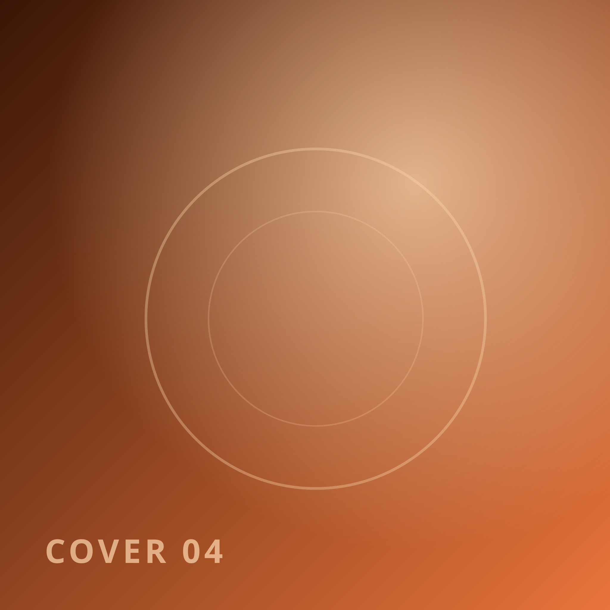

琉璃
macOS 音频播放器
正在播放
播放列表
均衡器
已开启
16 段
32 段
耳机校正
•••
前级
0.0
0:00 / 0:30
配色主题
琉璃 · 蓝釉流光
♬ 耳机校正
搜耳机型号，如 AirPods Pro、WH-1000XM5
⌄
按耳机型号查找校正曲线
输入型号查找
播放列表
6 项 · 3:00
＋ 添加
•••
⟳
起点
−
--:--.---
＋
⌖
→
终点
−
--:--.---
＋
⌖
⌁ 无缝接缝
♫ 副歌
⊗
⌄
◴ 速度
−
100%
＋
↶
♮ 音调
−
+0
半音
＋
−
+0
音分
＋
↶
↶ 全部恢复
⌄
静音
输出设备
›
声道
›
音轨
›
均衡器
›
耳机校正…
‹ 返回
F
全屏
白
置顶迷你窗

暮橙
−0:12
⤢
×